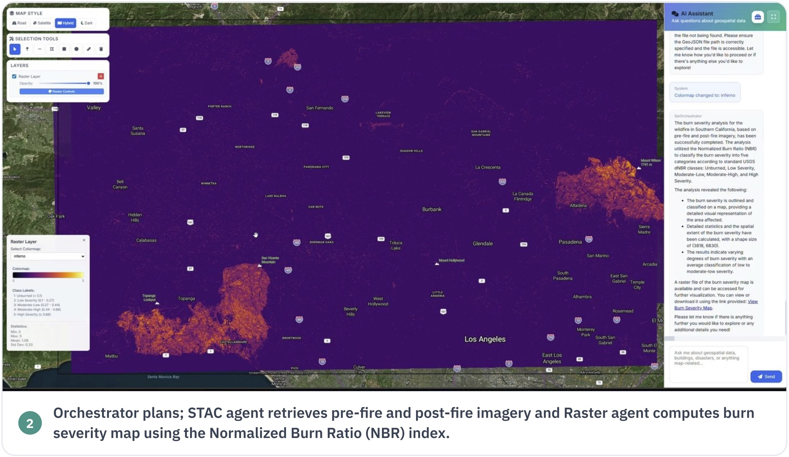

Muhammad Sohail Danish
I am a PhD candidate at MBZUAI, advised by Prof. Salman Khan. My research focuses on multisensor foundation models, vision-language models, and language agents for Earth observation and geospatial analysis.
Currently, I am a Student Researcher at Google Geo, working on generative models of vehicle trajectories conditioned on satellite imagery. Previously, I was a PhD Resident at Microsoft’s AI for Good Lab, where I worked on GeoFaham, a multi-agent system that integrates spatial databases, map features, and satellite imagery for disaster analysis.

Geospatial AI
Foundation Models
Vision-Language Models
Geospatial Agents
News
-
Joined Google Geo as a Student Researcher
Working on generative models for vehicle trajectories conditioned on satellite imagery.
-
Completed Microsoft AI for Good residency
Worked on GeoFaham, a multi-agent system for disaster analysis using spatial data and satellite imagery.
-
TerraFM accepted at ICLR 2026
TerraFM learns unified multisensor representations from 18.7M global Sentinel-1/2 samples.
-
Microsoft PhD Residency
Excited to start my PhD residency at Microsoft’s AI for Good Lab.
-
TerraFM preprint released
Posted TerraFM: A Scalable Foundation Model for Unified Multisensor Earth Observation
-
Paper accepted at ICCV 2025 (Highlight)
GEOBench-VLM accepted as an ICCV 2025 Highlight, recognizing our benchmark for evaluating VLMs across diverse remote-sensing modalities.
-
Paper accepted to CVPR 2025
EarthDial accepted to CVPR 2025: a conversational vision-language model for multi-sensory Earth observation
-
Paper accepted at DICTA 2024 (ORAL)
Perturbing Dominant Feature Modes for Single Domain-Generalized Object Detection
-
Started PhD at MBZUAI
Joined the Vision Lab in Abu Dhabi to build geospatial foundation models under Prof. Salman Khan.
-
Completed MS in Data Science (ITU)
Completed my MS in Data Science at ITU with a thesis on single-domain generalization for object detection.
-
Joined Intelligent Visual Analytics Lab at MBZUAI
Joined IVA Lab as a Graduate Research Assistant, working on single-domain generalization for object detection under Prof. Muhammad Haris Khan.
-
Paper accepted at CVPR 2022
Towards Low-cost and Efficient Malaria Detection
Publications & Releases
* represents equal contribution.

arXiv · 2026
GeoFaham: Domain-Specialized Multi-Agent Geospatial Analytics for Disaster Response
GeoFaham coordinates specialist agents for spatial queries, map retrieval, imagery search, and raster analysis. GeoFaham-Bench tests these workflows across 40 tasks drawn from 17 disaster records.


DICTA 2024 (Oral)
Perturbing Dominant Feature Modes for Single Domain-Generalized Object Detection
This work explores feature-space perturbations that reduce reliance on dominant source-domain features for object detection.

Experience
Google · Student Researcher
Apr 2026 – Present · Switzerland + Remote
Generative modeling of vehicle trajectories from satellite imagery, with applications to map freshness.
Microsoft · PhD Resident Fellow
Aug 2025 – Feb 2026 · Kenya
Multi-agent geospatial reasoning and tool use for disaster analysis, through GeoFaham and GeoFaham-Bench.
MBZUAI · PhD Researcher
Aug 2023 – Present · Abu Dhabi
Multisensor representation learning and vision-language models for Earth observation.
Intelligent Visual Analytics Lab · Graduate Research Assistant
Sep 2022 – Aug 2023 · Abu Dhabi
Single-domain generalization for object detection, through data diversification, alignment, and feature-space perturbation.
Intelligent Machine Lab · Graduate Student Researcher
Sep 2020 – Aug 2022 · Lahore
Domain adaptation for medical imaging, scene graph generation, and video face recognition. Teaching assistant for Deep Learning, Machine Learning, and Compiler Construction.
Education
PhD · Computer Vision
MBZUAI
MS · Data Science
Information Technology University
Thesis: single-domain generalization for object detection.
BS · Computer Science
Qurtuba University
Final year project: Luccy, an autonomous drone.
Talks & Service
-
October 2025
Guest speaker, Saint Mary’s College of California
Shared my research on GeoChat and GEOBench-VLM and LLM Agents for geospatial data.
-
March 2025
Guest speaker, ADIA Lab Research Seminar
Presented GeoChat's design with demos and applied use cases.
-
2023 – Present
Reviewing
ICCV 2023, CVPR 2024, ICCV 2025, CVPR 2025, NeurIPS 2026
Research Tools
Modeling
PyTorch, JAX/Flax, Hugging Face, multi-GPU and TPU training
Geospatial analysis
PostGIS, GDAL/Rasterio, TiTiler, Python and SQL